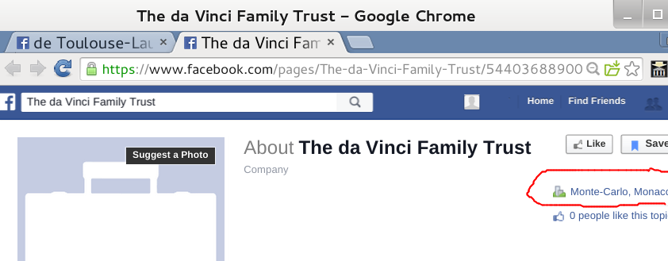

Two week earlier on 22 January 2010 in commentaries to Femme Champagne club's blog: http://bit.ly/1ypVoYi they made statement in Portuguese that Mr. Kurt F. Matthew Jr. is "O proprietário e presidente do nosso banco" - OWNER & PRESIDENT OF OUR BANK, however and interestingly enough only with Swiss phone and personal Harvard email address:
Email: KfMatthew@post.Harvard.edu
SWITZERLAND : +41 76 506 4211
There is the Prospectus or flyer of this bank to download from pdf-archive where Mr.Kurt F.Matthew Jr is the "owner and president", surely what is a bank without a such papers?
Here is his bank email: kfmatthew@privatebankgroup.com
Someone may wonder why Mr.Kurt F. Matthew Jr. modestly and cautiously calls himself only as managing partner only, while being as Owner & President of the Swiss Bank? It's might be because this prestigious post (as of president of Swiss bank(!) was now taken by noble Marie Louise de Toulouse Lautrec – who accordingly to her Facebook profile is also President and Resident Manager (Europe) at The Private Bank Group and Director and Trustee (retired Chairman) at the Toulouse-Lautrec Family Foundation
In such case Mr. Kurt F.Matthew obviously became a Chairman at de Toulouse-Lautrec Family Foundation and Director of The da Vinci Family Trust! So to say: to help noble woman Marie-Louise de Toulouse-Lautrec and Giovanna Da Vinci in managing their wealth & prosperity!
Accordingly to Facebook profiles of those corporate entities, first is in Geneva, Switzerland and second is in Monte-Carlo, Monaco.

Unfortunately to Mr. Kurt F.Matthew -Chairman & Director of such noble entities Monaco commercial register gives only Vinci Construction firm instead of expected Da Vinci Trust:
http://www.rci.gouv.mc/rc/ resultatRechercheRSEGratuit. jsp?rse=vinci
As well as Swiss MoneyHouse register found only Lautrec Group AG in Zug.
http://www.moneyhouse.ch/en/u/lautrec_group_ag_CH-170.3.031.381-4.htm
So both “noble” trust & foundations are faked and imaginable?
Let's return to The Private Bank Group. The whois inquiry made via GoDaddy show that domain www.privatebankgroup.com during 2005-2017 was taken by Mr. Kurt F. Matthew Jr. with Swiss addresses and telephone.
Registrant Name: Kurt Matthew
Registrant Organization: The Private Bank Group
Registrant Street: Rue du Rhone 14
Registrant City: Geneva
Registrant State/Province:
Registrant Postal Code: CH 1204
Registrant Country: Switzerland
Registrant Phone: 228199485
Registrant Phone Ext:
Registrant Fax: +1.2092433200
Registrant Fax Ext:
Registrant Email: privatebank@mail.com
Nothing is wrong with that – if someone likes to look as a Swiss bank though GoDaddy fetches now only empty page for privatebankgroup.com.
But unfortunately for Mr.Kurt F. Matthew Jr. and his "noble" Facebook aliases: Marie Louise de Toulouse Lautrec & Giovanna Da Vinci it appears that domain www.privatebankgroup.com before 1 Nov 2011 was linked or forwarded to website of Swiss Private Bankers Association http://swissprivatebankers.com as it allegedly is itself such association or connected with it.
http://web.archive.org/web/20110115000000*/http://www.privatebankgroup.com
For instance - click, please on 28 Jan 2011:
The last nail in the coffin of faked "Swiss" or non-swiss bank - The Private Bank Group was warning
https://www.finma.ch/en/finma-public/warnliste/the-private-bank-group/
issued by Swiss Financial Market Supervisory Authority FINMA on 26.09.2011 that no such bank or financial company is authorized for doing business in Switzerland and has no office in Geneva, Rue du Phone 14 and was black-listed:
The last chance was that there was some no-Swiss bank which may try to perform some unlicensed activity in Switzerland so we asked questions directly Mr. Kurt F. Matthew Jr. and his fraudulent associates or woman Facebook aliases:
where such a The Private Bank Group was registered and in which form?
Below: wonderful answer we received from Giovanna DaVinci to the questions addressed in first place to The Private Bank Group "owner and president" - Kurt F. Matthew Jr. :
It was indeed very interesting answer. Instead of just giving simple answer to simple questions about The Private Bank Group "with offices in many countries where copies of "Jornal do Commercio" we display :)" - to threaten with charges in sexual harassment, life-threatening, hate crime, aggravated assault, attempted rape(!) and possibly attempted murder in retaliation for something!.
It made us to look more closely into Giovanna Da Vinci Facebook profile where she informs the World that she is founder and owns 50% of company with name "Fashion Models of Harvard" and corporate web-site HarvardCEO.com, that she is "role model to billions of woman globally and my entire generation!" and she "will be the youngest woman in the history of the world for taking her company PUBLIC", and that she is very grateful to "Genius" and "advocacy" to "Kurtie" and ask him how he is going to spend multi-millions of EUROS (in IPO capital gains and quarterly dividends) which she " is going to make for him" (and "Kurtie" for her as Director of "Da Vinci Trust":)
As it was expected there is no corporate website of "Fashion Models of Harvard" at HarvardCEO.com
Search via NYS Division of Corporation http://www.dos.ny.gov/corps/bus_entity_search.html brings only no more active FASHION MODELS APARTMENTS, INC. instead of "Fashion Models of Harvard".
The same result is possible with multi-millions EURO IPO :).
However address is real and very interesting one.
27W 44th street is well-known "clubbiest club in New York" HARVARD CLUB OF NEW YORK CITY, and number 212 827 1270 is fax of it.
It is interesting who really takes suite #107. We will try it later.
Now, we have proof that real business address of faked Swiss bank - "The Private Bank Group" was suite #107 of Harvard Club of NYC.
So "Clubbiest Club in New York" accordingly to New Yourk Times:
http://www.nytimes.com/2012/08/26/realestate/the-harvard- .club-streetscapes-the- clubbiest-club-in-new-york. html?_r=0
was/is the residence for faked The Private Bank Group & Fashion Models of Harvard ?
That is why "Harvard (club) Crooks & Fraudsters"
The question to the management of Harvard Club of NYC: Do you lease offices to fraudulent businesses & persons like as The Private Bank Group & KF Matthew"? Do you lease offices for business at all? Who had rented Suite #107 in 2011 and now? Below - proof of delivery by United States Postal Service to K F Matthew 27-44W NY 10036
----------------------------------------------------MORE INFORMATION about Kurt F. Matthew Jr.--------------------------
Palm Beach Daily News are wrong or were mislead. Mr. Kurt F. Matthew Jr. is no resident of Switzerland,
no lives there. Today he stays and lives in Miami.Palm Beach, Pompano. Though sometimes he makes visits to Switzerland. Earlier he lived and conducted his fraudulent business activity in Harvard Club of New York City.
http://www.palmbeachdailynews.com/news/news/local/high-tide-on-lake-trail/nbSwD/
http://www.blacktiemagazine.com/society_2012_december/Sailors_for_the_Sea.htm